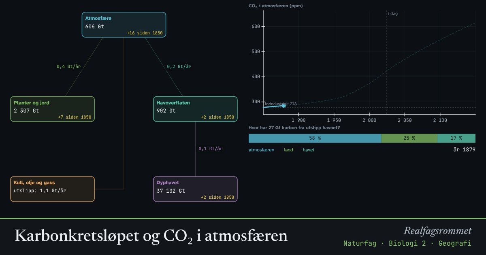

Karbonkretsløpet og CO₂ i atmosfæren
Karbon flytter seg hele tiden mellom luft, planter, jord og hav. Når vi brenner kull, olje og gass, tilfører vi karbon som har vært lagret i millioner av år. Omtrent halvparten blir værende i atmosfæren.
Start animasjonen
Formler
Om animasjonen
Tallene i boksene er karbon målt i gigatonn (milliarder tonn). Pilene viser netto strøm av karbon hvert år. Naturen flytter rundt 120 Gt mellom luft og planter og rundt 80 Gt mellom luft og hav hvert år, men disse strømmene var nesten i balanse før vi begynte å slippe ut.
Mer CO₂ i lufta gjør at planter vokser litt mer og at havet tar opp mer. Til sammen tar land og hav opp omtrent halvparten av utslippene. Resten blir i atmosfæren og forsterker drivhuseffekten.
Havet tar opp CO₂ i overflaten først. Det går svært sakte å blande det ned i dyphavet. Når CO₂ løses i havet, blir havet surere.
Prøv «Stopp alt i 2025»: CO₂-innholdet faller bare sakte, fordi det tar lang tid for havet og jorda å ta opp overskuddet. Modellen er en forenklet boksmodell, ikke en fullstendig klimamodell.
Prøv dette
- Hvor mange ppm CO₂ var det i 1850, og hvor mange er det i dag?
- Hvor stor andel av utslippene har blitt værende i atmosfæren?
- Sammenlign scenarioene. Hva skjer med CO₂-innholdet etter at utslippene stopper?
- Hvorfor er det mer CO₂ i lufta om vinteren enn om sommeren på den nordlige halvkule?
Kompetansemål
- Naturfag: Karbonforbindelser og karbonets betydning for livet
- Naturfag: Klimaendringer, utbredelse av arter og biologisk mangfold
- Geografi: Klimaendringer og karbonkretsløpet
- Biologi 1: Klima, arealbruk og bærekraftig forvaltning
- Biologi 2: Energistrøm og stoffkretsløp
- Biologi 2: Menneskelig påvirkning på kretsløpene
Mer om økologi og populasjoner
- Rovdyr og byttedyr
- Hvor mange fisk er det i vannet? Fangst–gjenfangst
- Eksponentiell og logistisk vekst
- Energistrøm og næringskjeder
- Miljøgifter hoper seg opp i næringskjeden
- Klimaendringer og artenes utbredelse
Mer om klima, miljø og bærekraft
- Drivhuseffekten og jordas strålingsbalanse
- Havforsuring: CO₂ gjør havet surere
- Klimaendringer og artenes utbredelse
- Miljøgifter hoper seg opp i næringskjeden
- Rovdyr og byttedyr
- Energistrøm og næringskjeder
- Grønn kjemi: atomøkonomi
- Årstider, dagslengde og solinnstråling
- Regnskygge og føhn: hvorfor Bergen er våtere enn Oslo
- Flom: regn, jord og asfalt